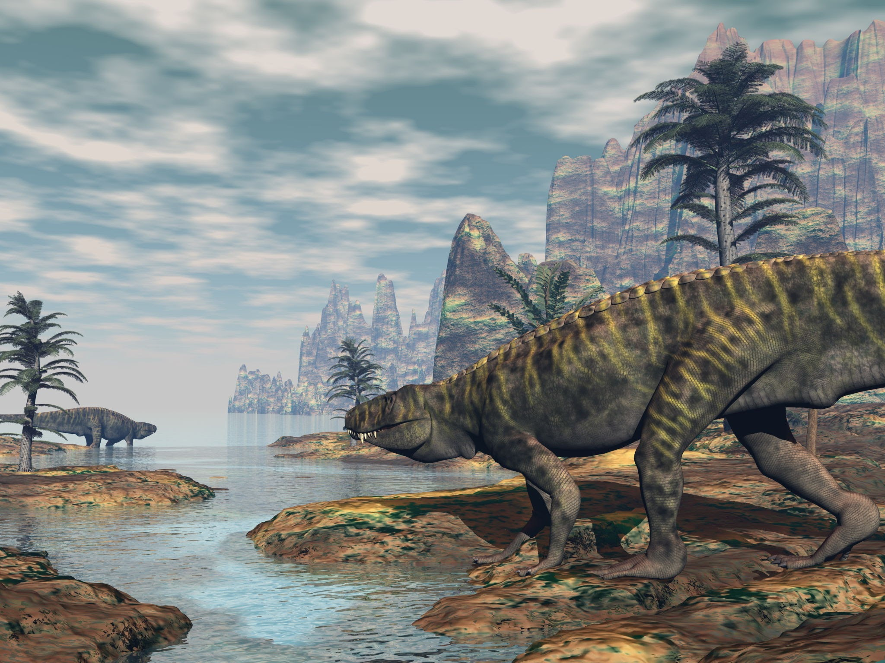
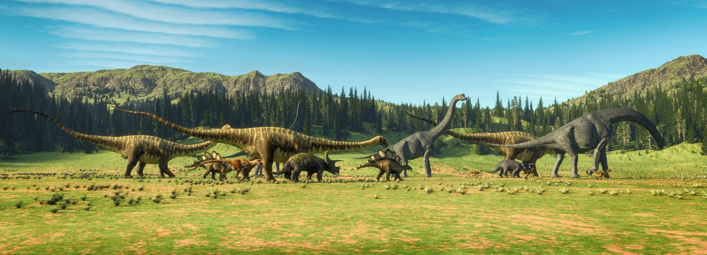
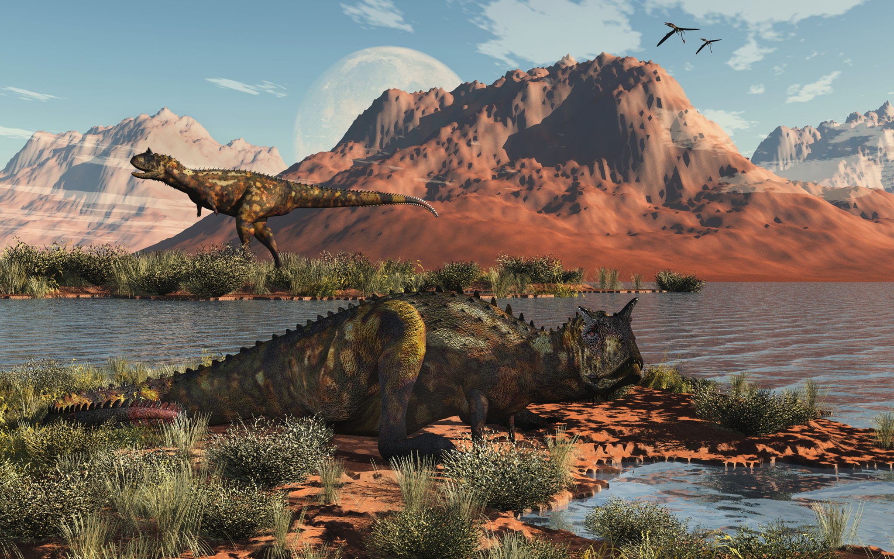

A história da evolução da terra começou há mais de 3,8 bilhões de anos. A terra foi formada há cerca de 4,57 bilhões de anos e, após a colisão que formou a Lua, uma grande quantidade de vapor de água foi liberadas pelos vulcões e milhões de anos depois, com o resfriamento gradual da atmosfera terrestre, o vapor se condensa e se precipitou na forma de chuva. A evidência mais clara da existência da vida na Terra data de cerca de 3 bilhões de anos, embora existam relatos do fóssil de uma bactéria de 3,4 bilhões de anos e de evidências geológicas da existência de vida há 3,8 bilhões de anos. Alguns cientistas admitem a hipótese da panspermia, onde a vida na Terra tenha iniciado através de meteoritos que abrigavam formas de vida primárias, mas a maioria das pesquisas concentra-se em várias explicações de como a vida poderia ter aparecido de forma independente na Terra. Os continentes deste período ainda estavam grudados em um supercontinente chamado Pangeia. O clima era quente, havia enormes florestas e criaturas incríveis começaram a aparecer. Entre elas estavam os primeiros dinossauros. Os dinossauros não surgiram “de repente”. Eles evoluíram aos poucos a partir de répteis antigos. No começo, muitos eram pequenos, rápidos e andavam sobre duas patas. Alguns tinham o tamanho de um cachorro. Mas, com milhões de anos de evolução, eles se diversificaram em milhares de espécies diferentes.
Na Idade Média, os fósseis eram considerados criaturas misteriosas e, devido ao forte contexto religioso da época, muitos consideravam os fósseis como resultados de experimentos divinos para criar formas de vida “superiores” ou que eles fossem uma amostra do poder da criação. Acredita-se que os gregos foram os primeiros que vincularam esses vestígios às formas de vida pretéritas. Mas ainda, pouco se sabia sobre leis e processos que ocorrem na Natureza.
O aumento no conhecimento dos registros fósseis também desempenhou um papel crescente no desenvolvimento da geologia, em particular da estratigrafia. A primeira metade do século XIX via a atividade geológica e paleontológica tornar-se cada vez mais organizada, com o crescimento das sociedades geológicas e dos museus e um aumento dos geólogos e especialistas em fósseis. Interesse aumentado por razões que não eram puramente científicas, como a geologia e paleontologia que ajudaram a encontrar e explorar os recursos naturais, como o carvão.

O Período Triássico, iniciado há cerca de 252 milhões de anos, marcou o renascimento da vida na Terra após a devastadora extinção em massa do Permiano. Nesse cenário inicial, o planeta possuía uma configuração geográfica única, com todas as massas de terra unidas no supercontinente Pangeia, cercado pelo imenso oceano Pantalassa. O clima era predominantemente árido e quente, caracterizado por vastos desertos no interior do continente e estações de monções intensas nas áreas costeiras. A flora dessa época era composta principalmente por plantas resistentes à seca, como coníferas primitivas, ginkgos e cicadófitas. Foi nesse ambiente desafiador que surgiram os primeiros dinossauros, ainda pequenos, ágeis e bípedes, que dividiam o território com grandes répteis semelhantes a mamíferos e com os ancestrais dos crocodilos, além dos primeiros mamíferos verdadeiros que começavam a se desenvolver discretamente.

Com a fragmentação da Pangeia e o início da separação dos continentes em Laurásia e Gondwana, teve início o Período Jurássico, há cerca de 201 milhões de anos. Essa divisão permitiu a entrada de correntes oceânicas e umidade para o interior das terras, transformando o antigo clima desértico em um ambiente global muito mais úmido, quente e tropical, totalmente desprovido de calotas polares. A vegetação respondeu a essa mudança com uma explosão de vida, onde florestas densas de samambaias gigantes, sequeias e coníferas cobriram o planeta, criando uma abundância sem precedentes de alimento. Essa fartura vegetal propiciou o surgimento e a soberania absoluta dos dinossauros saurópodes, os gigantes de pescoço longo que podiam pesar dezenas de toneladas. Para caçá-los, evoluíram grandes predadores como o alossauro, enquanto os céus eram dominados pelos pterossauros e pelas primeiras aves, e os mares quentes eram habitados por répteis marinhos colossais como os plesiossauros.

O Período Cretáceo começou há aproximadamente 145 milhões de anos e representou o ápice da diversificação e da evolução biológica da Era Mesozoica. Os continentes continuaram a se afastar ativamente, moldando os oceanos modernos e elevando o nível do mar a ponto de inundar grandes porções de terra com mares rasos e aquecidos. A grande revolução desse período ocorreu no reino vegetal com o surgimento das angiospermas, as plantas com flores, que trouxeram novas cores à paisagem e impulsionaram a evolução de insetos polinizadores como abelhas e borboletas. Essa nova base ecológica sustentou uma variedade fantástica de dinossauros altamente especializados, desde os herbívoros blindados e com chifres, como o triceratops e o anquilossauro, até os maiores predadores terrestres da história, como o tiranossauro rex e o espinossauro. O período, contudo, teve um fim abrupto há 66 milhões de anos, quando o impacto de um asteroide na atual Península de Yucatán desencadeou mudanças climáticas catastróficas que extinguiram a maioria das formas de vida, deixando apenas as aves e pequenos mamíferos como herdeiros do planeta.